Designing an app to make TV watching easier; track, recommend and get new recommendations for shows.

The Problem
Invent, design and brand a TV tracking and recommendation app with the following desired features:
- List the shows you're watching with your progress
- Recommend shows for you based off of your favorite shows
- Shows you what your friends are recommending
- Lets you see a friend's progress on a shows you're watching together
The Solution
TV Rex: A TV Show platform to keep you organized and give you recommendations.
- Keep lists of what you’re currently watching, wanting to watch and have watched
- Add friends or follow people to see their favorite shows
- Track your progress of each title, whether you’re watching alone or with friends
- Get recommendations based off of your recommendations your friends'

I wanted to create an app to help users stay organized and up-to-date with their favorite shows. Keeping the user in mind, I always focused on keeping screens clean and tasks simple, so you can find a title, find your place and go. With recommendations based off of the user's friends and followers on top of the app's algorithm, they'll have a good idea of what they'll enjoy without choice fatigue.
Initial Concept
I wanted to create a place where all of your shows can live in one spot, whether you're watching it on Netflix, Hulu or Amazon Prime. My inspiration came from Goodreads, a platform for books. I took this idea and thought about how it would translate to TV.
Research
was able to survey 48 people to gain insight into their Film/TV watching habits and app wishes/desires.
Main Takeaways:
- There is general interest in this type of app.
- Though a lot of people are influenced by user reviews, very few users like to leave reviews for what they watch.
- Most users trust and enjoy the recommendations of streaming sites’ algorithms as well as peer recommendations.
- IMDB and Rotten Tomatoes were the top film/tv sites used for reviews and information.
- Netflix, Amazon Prime, Hulu and HBO were the top streaming sites and most users only stream content as opposed to watching live TV or owned content.
- People mostly rely on streaming sites to keep track of their place for their content, though some keep track of their own in notebooks.
Competitive Analysis
Based on the user surveys, I felt good about my initial idea, but needed to research platforms that currently exist to see if/where there is room in the market for TV Rex.
I researched Tubi, Decider and TV Time:
- Hobi is an app that helps you track your progress on shows, but has a small user base.
- TV Time is a social platform for tracking shows and chatting about them.
- Decider helps you decide what to watch next, but is only a website without personalization.
Researching those companies helped me to formulate how to stand out in the market:
- Target an audience that isn’t looking for another social app like TV Time.
- User recommendations should be as personalized as possible.
- Try and find a way to have the streaming apps (Netflix, Hulu, etc) sync to TVRex for easy use.
User Personas
People can use Gather in different ways, as we see in our User Personas. Here are the various goals that our users have:
- Adam is looking to stay up-to-date with trending titles. He likes to know where he is able to watch a certain show and have organized lists of what he’s watching and what he’s seen. He dislikes rating titles so will only do so if it’s a simple task for him. He also doesn’t like that every app tries to turn into a social app, so he doesn’t want to see a screen of a social feed.
- Cindy is a professional who loves lists. She’s looking for a platform to stay organized in her free time. She likes to watch shows with her husband, so she’d love to be able to know when he’s seen an episode of their favorite show so that she can watch too. She also doesn’t want a social platform and dislikes suggested content that feels irrelevant.
 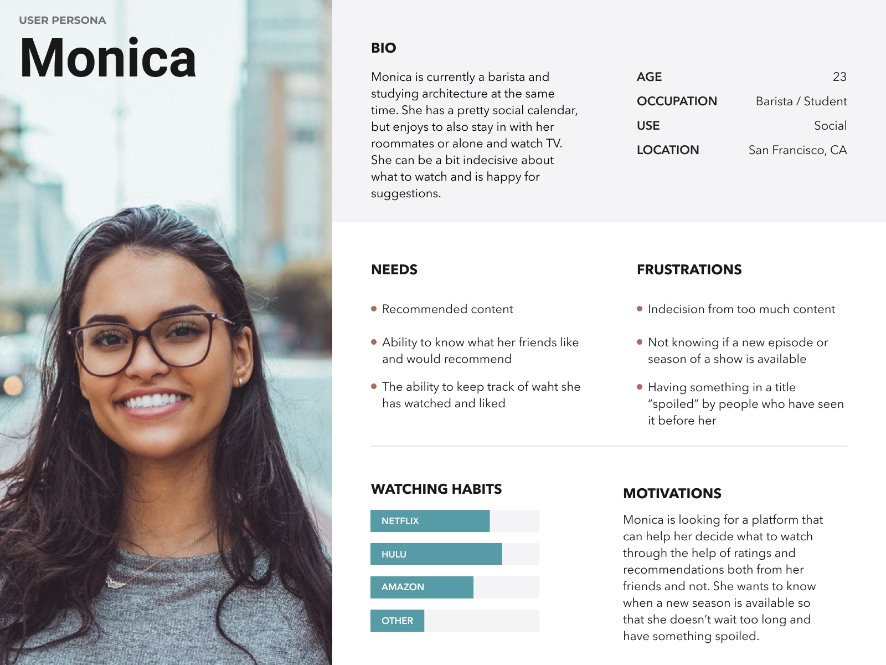
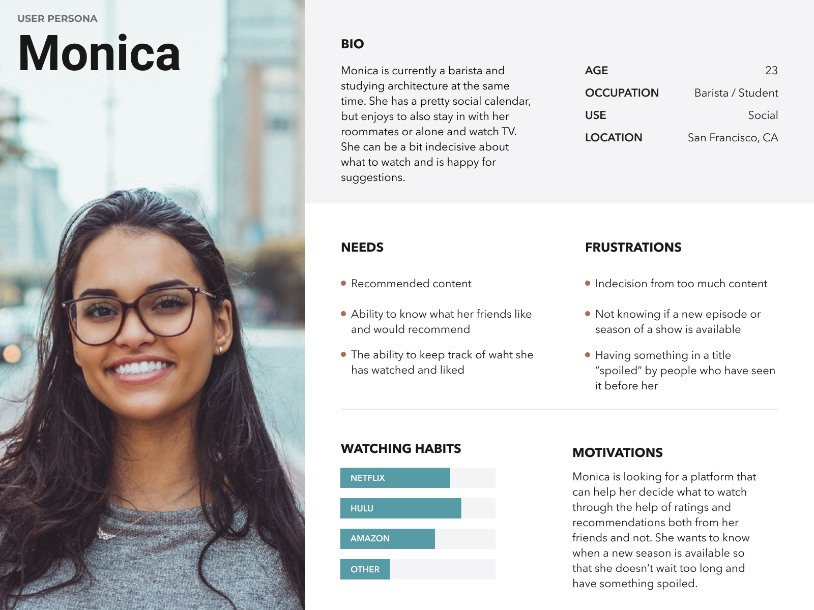
User Stories
From my research, I was able to determine the various tasks that were integral for the user, organized by priority level.
High Priority
- Sign up for an account
- Sign into an account
- See shows I'm currently watching
- Find what titles my friends recommend
- Find recommendations based off of my shows
- Recommend a title I've seen
- Add a title to a watch list
Medium Priority
- Sync with my streaming accounts
- Add or follow "friends"
- See a title's IMDB rating
- See a title's Rotten Tomatoes rating
- Make a title "invisible" to other users
Low Priority
- See titles I've recommended
- Be alerted a show is coming to a streaming platform
- Clicking a link to continue watching a show
User Flows
User Flows is a very important step in the creation process of any platform. Understanding where your user needs to go when, is crucial to determine before creating the wireframes, prototypes and final pieces.

Testing
I tested my low and high fidelity prototypes to six users, all garnering information that helped me further my designs. Through this User Testing, Preference Testing and Grader Feedback, rounds of changes were made.
- Removing unnecessary text
- Adding more options to share
- Eliminating a search bar on each screen
- Not having the full logo/app name on each screen
- Overall logo design
- Adding a full logo instead of just a simple “g”
- Avoiding the use of coral text and using green, black or grey
Three preference tests were also conducted to help answer some detailed design questions that naturally arose through the design process.
 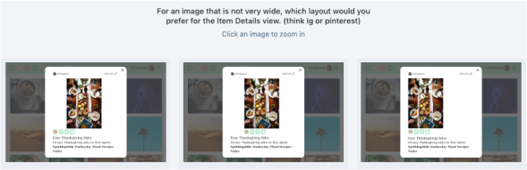
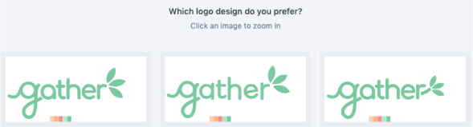
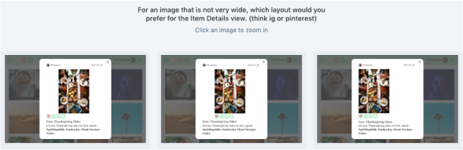
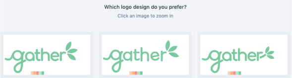
Wireframing
Going from quick sketches, to lo-fi to hi-fi versions, my designs went through a lot of cycles of feedback and designing.
Sketches
 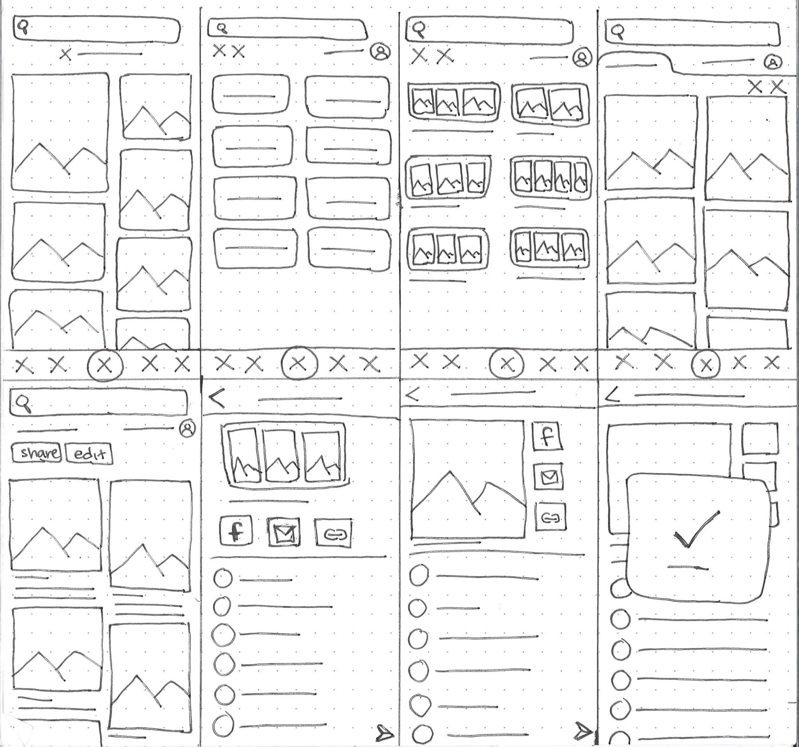
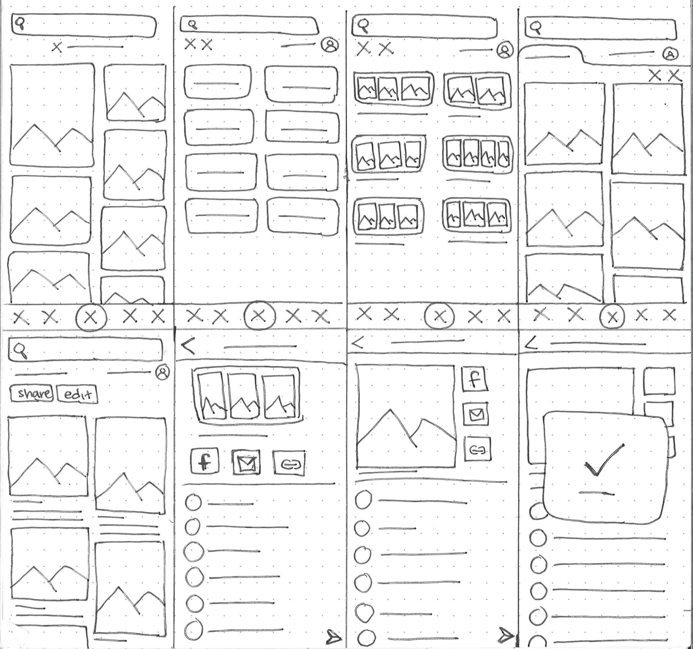
LoFi

 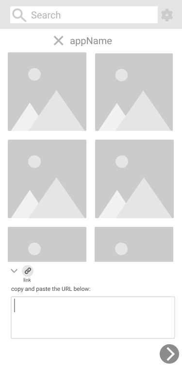
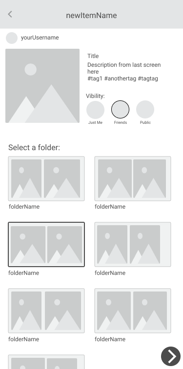
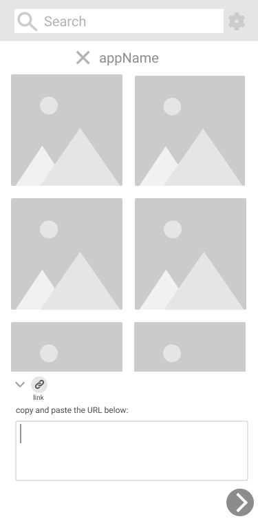
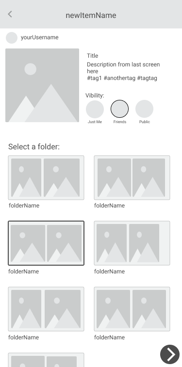

HiFi
 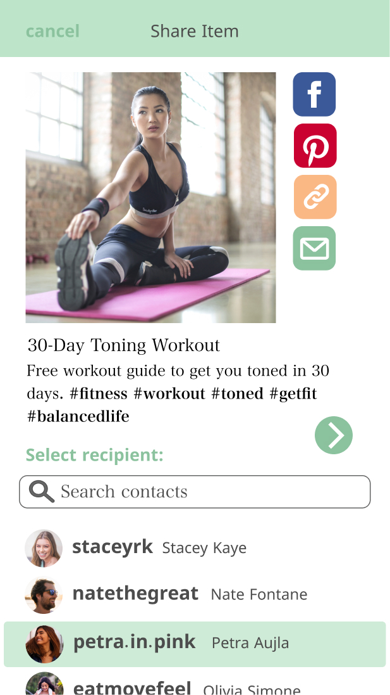
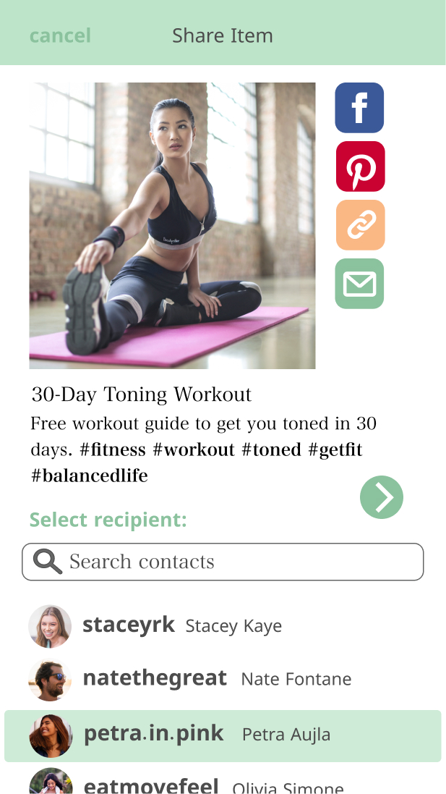

Branding: Name, Logo & Color Palette
I wanted to create a place for both people and content to gather, connect and intertwine, which is how the name, “Gather” came to be. The logos and color palette came naturally as soon as I had the brand philosophy in mind.


Iterations
From all the gathered insight and feedback, I was able to go from my initial wireframe sketches to my final hi-fi screens (and prototypes).
 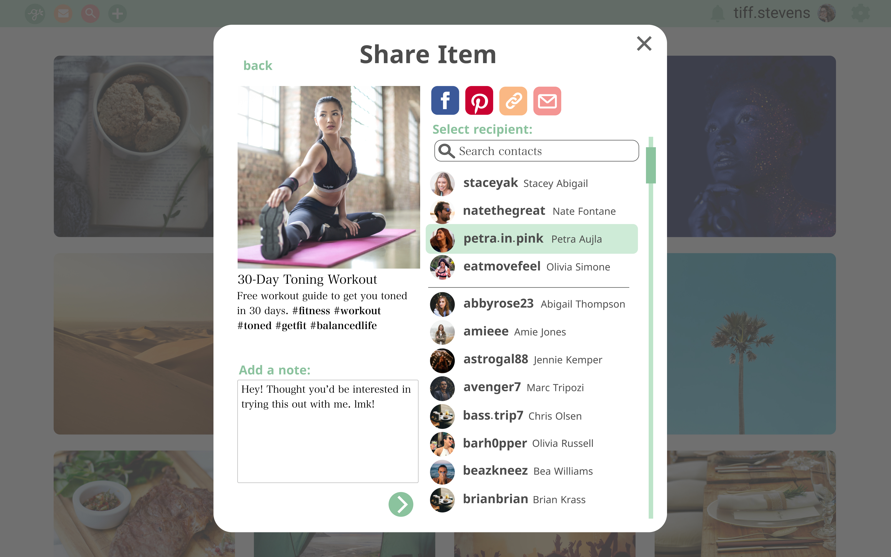
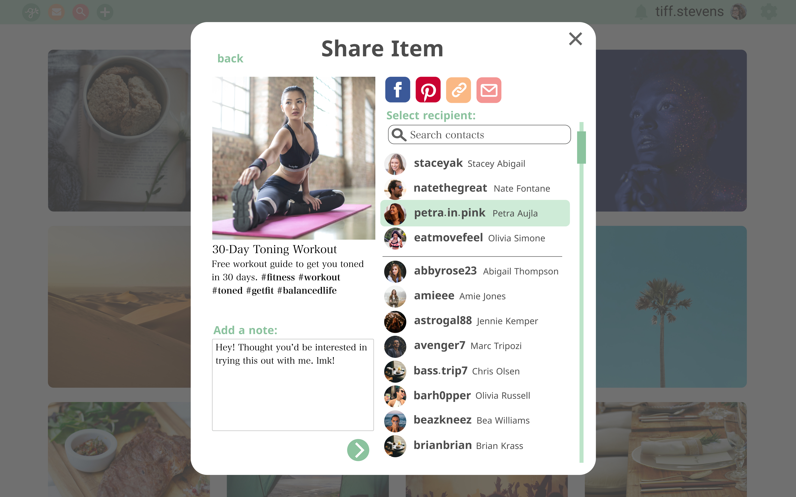
 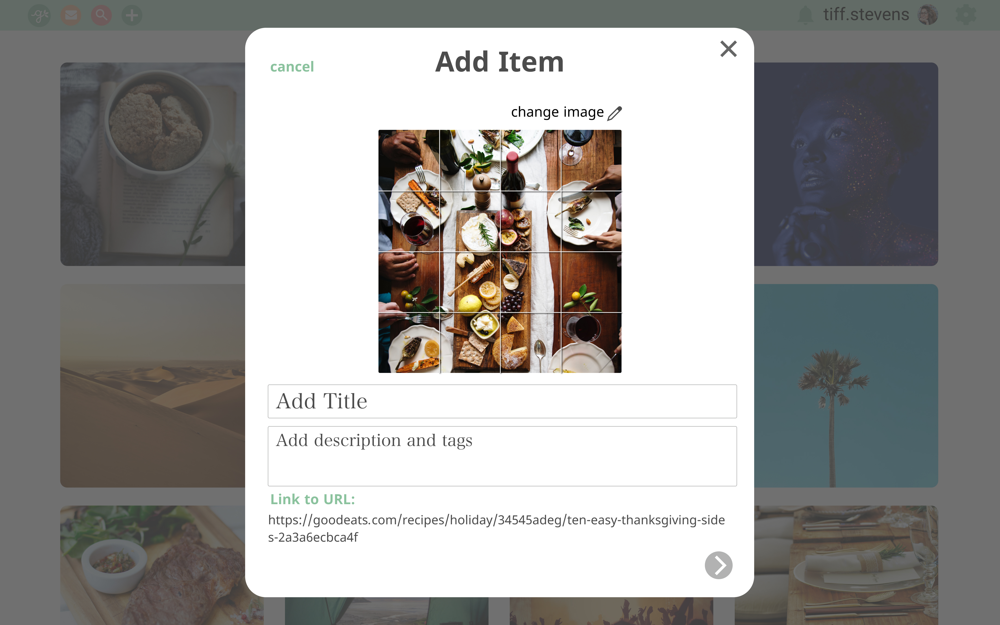
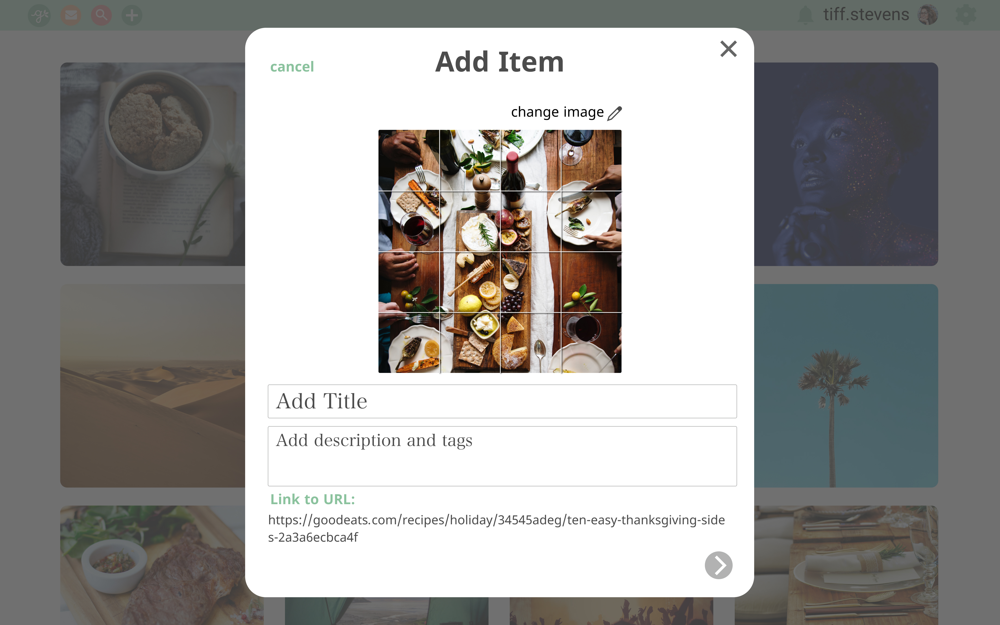
Takeaways
- Designing for both desktop and mobile while maintaining proportional spacing and congruence
- Creating a logo from rough sketches to vector files
- Being able to take a project from start to finish, utilizing all UX steps
- Not all feedback is as helpful as others, so it’s important to survey and test as many people as possible